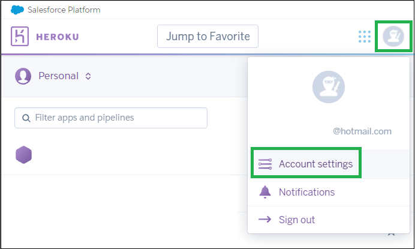
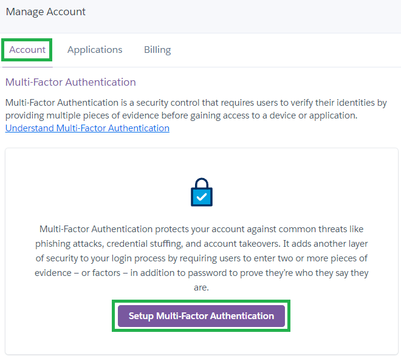
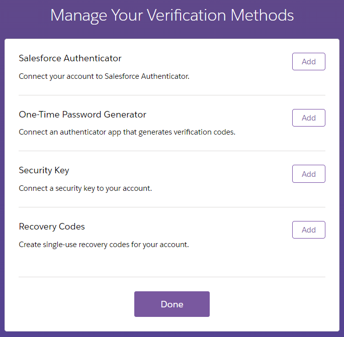
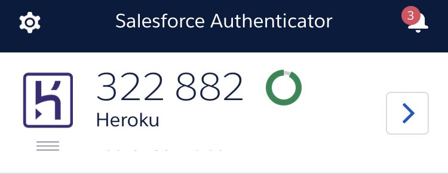
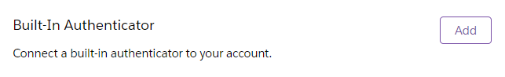
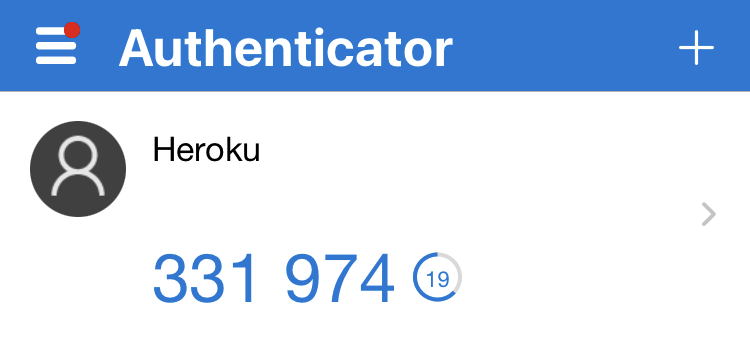
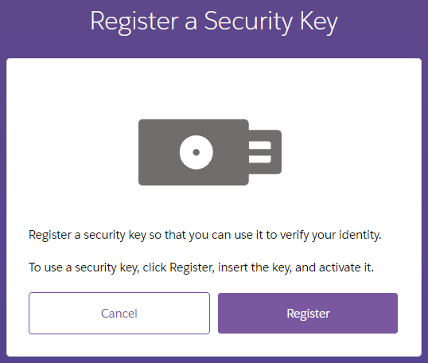
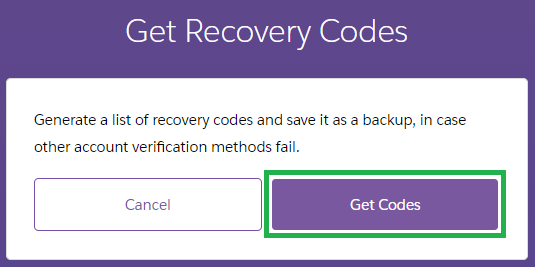
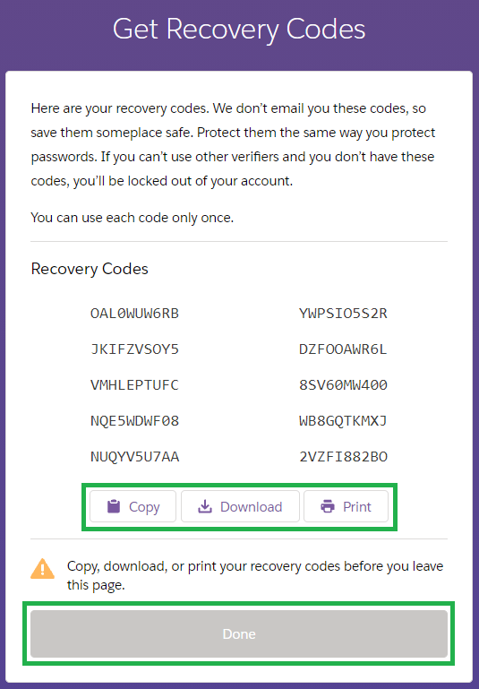

Heroku MFA
Multiple factor authentication (MFA) also called 2 factors authentication (2FA) is a safety feature preventing malicious access to an account. Once authenticated with your login and password you will be required to confirm your identity with another method, a second factor authentication.
Losing access
It is recommended to setup at least two MFAs, one being a copy of the recovery codes. Salesforce take security very seriously and recovering your account after losing access might range from very complex to impossible. For increased safety, setup more than one authentication method on more than one device.
To setup MFA and secure your account select Continue.
If you don’t want to secure your account, select Later.
If you want to enter your account without setting MFA just select Later.
{kind=link}
You will also find the possibility to perform this operation from your Heroku account settings.
 {kind=link}
{kind=link}
You will be proposed various authentication options, see the explanation below.
You should select at least one (Salesforce Authenticator is recommended) but might use more than one (registering a build in authenticator like a fingerprint reader is also a good idea) and you should print your Recovery Codes and keep them together with your Nightscout information.
{kind=link}
Salesforce Authenticator
Salesforce Authenticator relies on an additional app you will need to install on your phone. It is available in the Google Play Store and the Apple Store.
Losing or removing the Authenticator app
It is recommended to setup at least two MFAs, one being a copy of the recovery codes. If your only authentication method is this app you will lose access if you remove it or lose/change phone!
If you select this option (use the Add button) you will need to install the app to get the passcode called Two-Word Phrase
Install the app and Add an Account.
{kind=link}
The app will give you a Two-Word Phrase (perfect guide in the example below)
{kind=link}
Copy it or type it into the authentication connection window in Salesforce Heroku and select Connect.
{kind=link}
In the app, confirm with Connect then Got It.
{kind=link}
{kind=link}
You will now see Heroku in the app, with a single use code (that you usually won’t need).
{kind=link}
Now, every time you will log into Heroku, you will have to confirm using your phone. Just accept the access.
Once the account added into Salesforce Authenticator you will be able to add another option that is Built-In Authenticator (like a fingerprint reader).
{kind=link}
Built-In Authenticator
You need Salesforce Authenticator setup in order to use this method (see above).
Adding a built in authenticator will allow you to use your device biometric devices like a fingerprint reader.
Select Register to add this identification method as a second factor. You will not be required to use the Salesforce Authenticator after registration. You can now remove it if you wish (not recommended).
{kind=link}
Note that you won’t be able to use your fingerprint if created on a computer to unlock your account when using your phone and vice versa. You should add one fingerprint per device type.
One-Time Password Generator
You can use other apps to create your second factor, like Google Authenticator or Microsoft Authenticator apps. You will find both these apps in the Google Play Store and the Apple Store.
First install one of these apps on your mobile device, then select Add.
Scan the QR code with the app and Connect.
{kind=link}
Your Heroku will now be connected to this second factor authentication method and you will have to approve access, when logging into Heroku, with the app you selected.
{kind=link}
Security Key
Security key authentication requires you to use a hardware key. You probably won’t be reading this if you own one.
{kind=link}
Recovery Codes
You should enable and keep a copy of your recovery codes. This might eventually be the only way to recover your account access if something goes wrong with the other authentication method. Print a copy and keep it with your Nightscout information together with your diabetes documentation.
 {kind=link}
{kind=link}